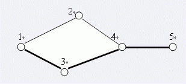

对Samuel星球的探险已经取得了非常巨大的成就，于是科学家们将目光投向了Samuel星球所在的星系——一个巨大的由千百万星球构成的Samuel星系。
星际空间站的Samuel II巨型计算机经过长期探测，已经锁定了Samuel星系中许多星球的空间坐标，并对这些星球从1开始编号1、2、3……。
一些先遣飞船已经出发，在星球之间开辟探险航线。
探险航线是双向的，例如从1号星球到3号星球开辟探险航线，那么从3号星球到1号星球也可以使用这条航线。
例如下图所示：

在5个星球之间，有5条探险航线。
A、B两星球之间，如果某条航线不存在，就无法从A星球抵达B星球，我们则称这条航线为关键航线。
显然上图中，1号与5号星球之间的关键航线有1条：即为4-5航线。
然而，在宇宙中一些未知的磁暴和行星的冲撞，使得已有的某些航线被破坏，随着越来越多的航线被破坏，探险飞船又不能及时回复这些航线，可见两个星球之间的关键航线会越来越多。
假设在上图中，航线4-2（从4号星球到2号星球）被破坏。此时，1号与5号星球之间的关键航线就有3条：1-3，3-4，4-5。
小联的任务是，不断关注航线被破坏的情况，并随时给出两个星球之间的关键航线数目。现在请你帮助完成。